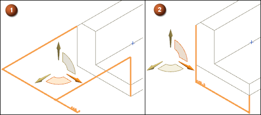
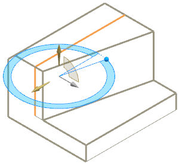

定向工具
在某些命令中使用定向工具(OrientXpress)可在创建或编辑几何对象时快速指定方向或平面方位。根据需要指定的方位类型，该工具可显示正交轴和平面。
 |
可选的轴允许您指定方向
|
|
可选的平面允许您指定平面方位
如果只需要矢量输入，则定向工具只显示轴。如果只需要平面输入，则该工具只显示平面。如果同时需要平面输入和矢量输入，则如同使用“同步建模”中的线性尺寸命令一样，该工具同时显示平面和轴。
可以直接选择定向工具上的某个轴或平面来指定方位，如下图所示。
|

|
线性尺寸的两个可能方位
|
1 |
选择定向工具的 YZ 平面以定向 YZ 平面上的线性尺寸。 |
|
2 |
选择定向工具的 XY 平面以定向 XY 平面上的线性尺寸。 |
定向工具还可按集成了命令操控器的方式显示，如下所示。
|

|
具有“移动面”命令中“变换”操控器的定向工具
位于何处？
对话框中的位置 |
方位→方向（或点构造器） 在要求您为某一进行中的操作指定方向或平面时，也可能自动出现。 |